Alternator Assembly (2GR-FE) Reassembly |
| 1. Install Alternator Drive End Frame Bearing |
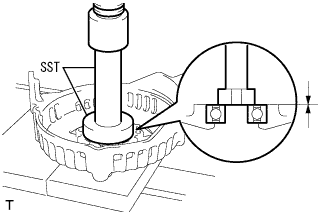 |
Using SST and a press, press a new alternator drive end frame bearing into the alternator drive end frame assembly until it is flush with the end surface.
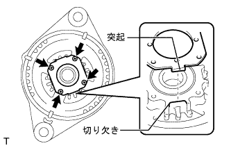 |
Align the protrusion of the bearing retainer plate with the cutout of the drive end frame, and install the bearing retainer plate with the 4 screws.
| 2. Install Alternator Rotor Assembly |
Set the drive end frame on the alternator pulley.
 |
Install the alternator rotor assembly.
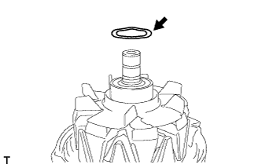 |
Install the alternator washer.
| 3. Install Alternator Coil |
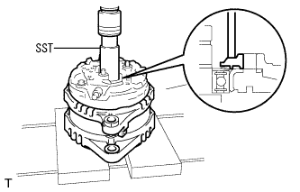 |
Using SST and a press, press the alternator coil onto the alternator drive end frame assembly.
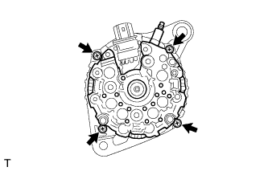 |
Tighten the 4 through bolts.
| 4. Install Alternator Brush Holder Assembly |
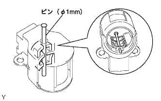 |
Insert a pin (diameter 1.0mm) into the hole of the alternator brush holder to hold the 2 brushes.
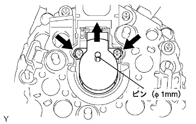 |
Install the alternator brush holder to the alternator coil with the 2 screws.
Remove the pin (φ1.0mm).
| 5. Install Terminal Insulator |
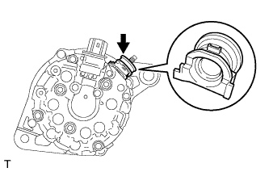 |
Install the alternator terminal insulator to the alternator coil.
| 6. Install Alternator Rear End Cover |
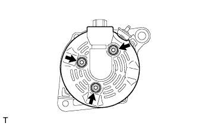 |
Install the alternator rear end cover to the alternator coil with the 3 nuts.
| 7. Install Alternator Pulley with Clutch |
Assemble the alternator pulley with clutch.
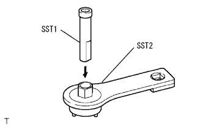 |
Install SST1 to SST2.
Secure the width across flats of SST1 in a vise.
 |
Install SST1 to the end of the alternator rotor shaft.
 |
Install SST2 to the alternator pulley with clutch.
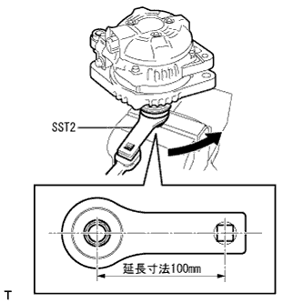 |
Turn SST2 counterclockwise to tighten the alternator pulley with clutch.
)Install a new alternator pulley cap to the alternator pulley with clutch.